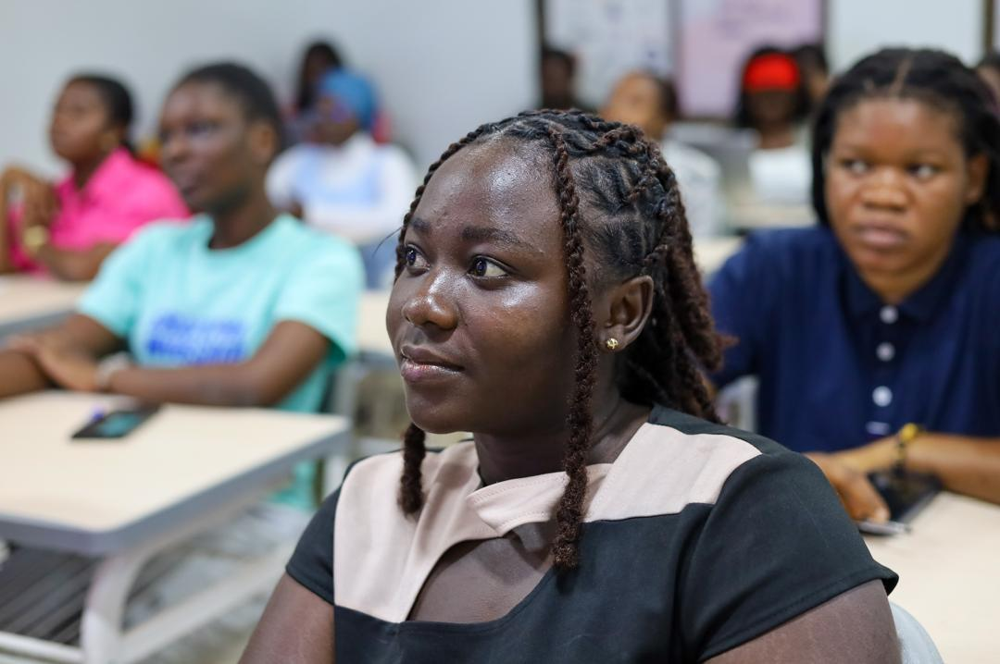

⌘
Frontend
Development
Designing and developing responsive websites, web applications and digital platforms using modern web technologies.
GET TO KNOW ME
I'm Acheampong Grace Otuo, a UI/UX Designer, Frontend Developer and Digital Marketer passionate about creating meaningful digital experiences.
My journey combines marketing, technology, creative design and practical problem solving. I enjoy turning ideas into digital solutions that make a difference.

CREATIVE MIND. PURPOSEFUL WORK. ✳MY STORY
My professional journey began with an interest in marketing, communication and understanding people. Studying Marketing helped me appreciate consumer behaviour, brand communication and the importance of creating value.
As my interests developed, I became increasingly drawn to technology and digital innovation. I began exploring frontend development, software engineering and UI/UX design, discovering how technology could be used to solve everyday problems and improve people's experiences.
Today, I bring these interests together through website development, digital product design, digital marketing, IT support and administrative coordination. I enjoy working on projects that combine creativity, technology and practical thinking.
I believe that learning never stops. Every project, collaboration and new challenge gives me an opportunity to improve, contribute and discover better ways of doing things.
WHAT I DO
Designing and developing responsive websites, web applications and digital platforms using modern web technologies.
Creating user-friendly interfaces, visual designs, digital content and engaging experiences that communicate clearly.
Supporting brands through digital marketing, social media, content strategy, audience engagement and creative communication.
02 / MY PROFESSIONAL JOURNEY
Different environments. Different challenges. One continuous journey of learning, creating and making an impact.
IT ASSISTANT · NATIONAL SERVICE
WACCI · UNIVERSITY OF GHANA
Supporting institutional technology and building digital solutions that improve everyday operations.
DIGITAL MARKETER & RECEPTIONIST
HEALTHCARE · CUSTOMER EXPERIENCE
Combining creative communication, digital content and customer engagement to support healthcare awareness.
RETAIL BANKING INTERN
BANKING · CUSTOMER RELATIONS
Gained practical experience in banking operations, customer support and financial service processes.
MARKETING & OPERATIONS INTERN
BUSINESS · OPERATIONS
Supporting business activities through marketing, record keeping and operational coordination.
LEADERSHIP & COMMUNITY
Association of Marketing and Supply Chain Students (AMSS)
Pentecost University
Served as the first female President of the Association of Marketing and Supply Chain Students, leading an association of over 200 members.
Established the association's official Instagram presence, launched AMSS Wednesdays and organised branding workshops and digital marketing seminars for over 100 students.
Led initiatives that supported student engagement, entrepreneurship, academic participation and professional development.
LEARNING & DEVELOPMENT
My learning journey combines formal education, professional training and hands-on technical experience. I continue to develop my knowledge in software engineering, digital product development, design and emerging technologies.
Explore my education ↗WHAT GUIDES MY WORK
I enjoy exploring ideas, asking questions and discovering new ways to solve problems.
I approach challenges with fresh thinking and a willingness to experiment.
I value teamwork, shared knowledge and the different perspectives people bring.
I welcome feedback, embrace challenges and remain committed to continuous improvement.
WHAT'S NEXT?
Have a project, opportunity or idea you'd like to explore together?
Get in touch ↗